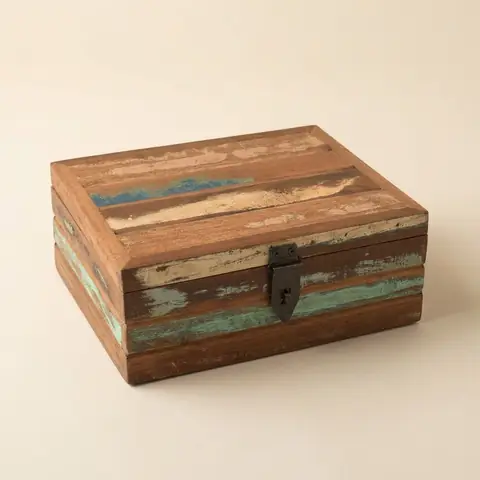
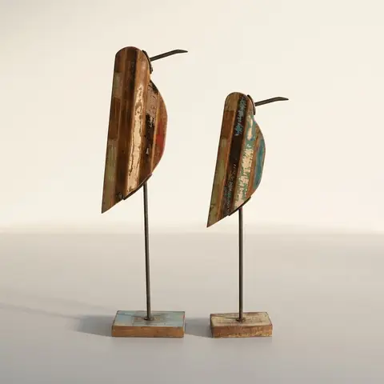

Reclaimed Wood Cart Valet Tray / Desk Organizer
Handcrafted tray for your daily essentials
₹2,040
I am a two-compartment valet tray made by skilled artisans from reclaimed wood and iron. I keep your keys, wallet, and phone organised on my slatted base.
Made from genuine recycled and reclaimed woodHas two open compartments for everyday essentialsFeatures a decorative iron wheel and sturdy metal legsShips as a parcel
Pairs well with

Reclaimed Wood Keepsake Box
Bird Sculptures, set of 2 Elephant Sculptures, set of 2
Elephant Sculptures, set of 2Care
Wipe clean with a dry or slightly damp cloth.
Delivery & returns
India only. Leaves Jodhpur in 3–7 business days. 7-day returns; report any damage within 48 hours.
Photos marked Concept image are AI-generated from the real product photos and checked for accuracy. Handmade, so each piece varies slightly.
Open in swipe view